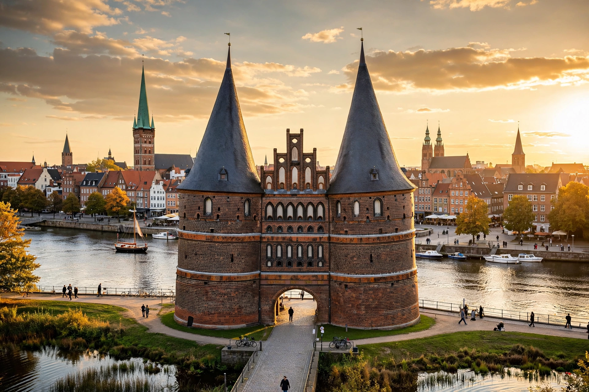

Lübeck is a city in northern Germany, in Schleswig-Holstein, on the River Trave near the Baltic Sea. Its medieval old town, on an island enclosed by the Trave, is a UNESCO World Heritage Site.
Refounded in 1143 by Adolf II of Holstein and rebuilt by Henry the Lion in 1159, Lübeck became the leading city — "Queen" — of the Hanseatic League, dominating Baltic trade for centuries under Lübeck law. It remained a free imperial city and, until 1937, a sovereign city-state. The 1942 Palm Sunday air raid destroyed much of the centre, later carefully rebuilt including the Marienkirche and the Holstentor gate.
Lübeck is Thomas Mann's home city and the setting of Buddenbrooks, home to Günter Grass and Willy Brandt, and famed for Niederegger marzipan. See Hanseatic League.